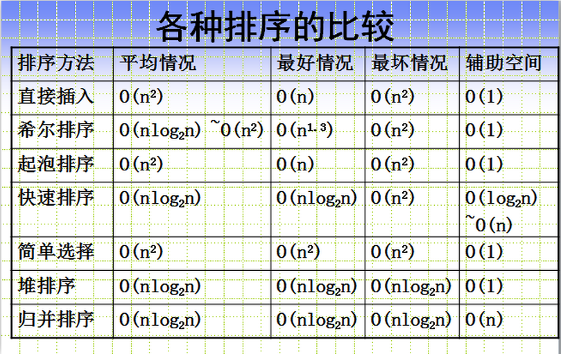
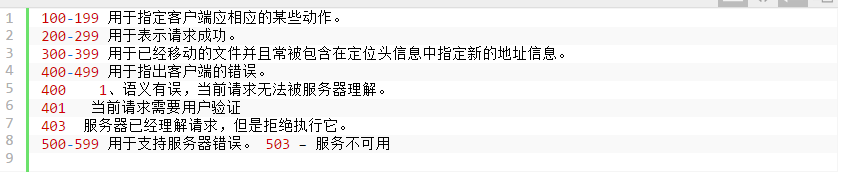
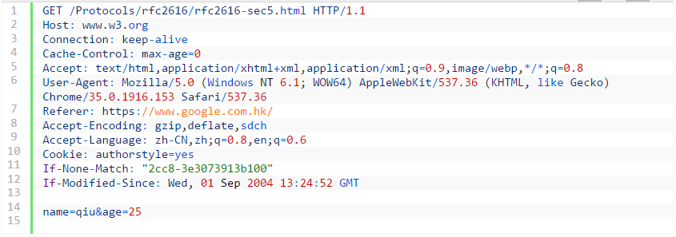

其他的知识点
常见排序算法的时间复杂度,空间复杂度

前端需要注意那些SEO
- 合理的title、description、keywords：搜索对着三项的权重逐个减小，title值强调重点即可，重要关键词出现不要超过2次，而且要靠前，不同页面title要有所不同；description把页面内容高度概括，长度合适，不可过分堆砌关键词，不同页面description有所不同；keywords列举出重要关键词即可
- 语义化的HTML代码，符合W3C规范：语义化代码让搜索引擎容易理解网页
- 重要内容HTML代码放在最前：搜索引擎抓取HTMl顺序是从上到下，有的搜索引擎对抓取长度有限制，保证重要内容一定会被抓取
- 重要内容不要用js输出：爬虫不会执行js获取内容
- 少用iframe：搜索引擎不会抓取iframe中的内容
- 非装饰性图片必须加alt
- 提高网站速度：网站速度是搜索引擎排序的一个重要指标
你有哪些性能优化的方法?（看雅虎14条性能优化原则）
http状态码有那些？分别代表是什么意思？

一个页面从输入URL到页面加载显示完成，这个过程中都发生了什么？（流程说的越详细越好）
- 查找浏览器缓存
- DNS解析、查找该域名对应的IP地址、重定向（301）、发出第二个GET请求
- 进行HTTP协议会话
- 客户端发送报头(请求报头)
- 服务器回馈报头(响应报头)
- html文档开始下载
- 文档树建立，根据标记请求所需指定MIME类型的文件
- 文件显示
- 浏览器这边做的工作大致分为以下几步：
- 加载：根据请求的URL进行域名解析，向服务器发起请求，接收文件（HTML、JS、CSS、图象等）。
- 解析：对加载到的资源（HTML、JS、CSS等）进行语法解析，建议相应的内部数据结构（比如HTML的DOM树，JS的（对象）属性表，CSS的样式规则等等）
web开发中会话跟踪的方法有哪些
- cookie
- session
- url重写
- 隐藏input
- ip地址
HTTP method
- 一台服务器要与HTTP1.1兼容，只要为资源实现GET和HEAD方法即可
- GET是最常用的方法，通常用于请求服务器发送某个资源。
- HEAD与GET类似，但服务器在响应中值返回首部，不返回实体的主体部分
- PUT让服务器用请求的主体部分来创建一个由所请求的URL命名的新文档，或者，如果那个URL已经存在的话，就用干这个主体替代它
- POST起初是用来向服务器输入数据的。实际上，通常会用它来支持HTML的表单。表单中填好的数据通常会被送给服务器，然后由服务器将其发送到要去的地方。
- TRACE会在目的服务器端发起一个环回诊断，最后一站的服务器会弹回一个TRACE响应并在响应主体中携带它收到的原始请求报文。TRACE方法主要用于诊断，用于验证请求是否如愿穿过了请求/响应链。
- OPTIONS方法请求web服务器告知其支持的各种功能。可以查询服务器支持哪些方法或者对某些特殊资源支持哪些方法。
- DELETE请求服务器删除请求URL指定的资源
从浏览器地址栏输入url到显示页面的步骤(以HTTP为例)
- 在浏览器地址栏输入URL
- 浏览器查看缓存，如果请求资源在缓存中并且新鲜，跳转到转码步骤
- 如果资源未缓存，发起新请求
- 如果已缓存，检验是否足够新鲜，足够新鲜直接提供给客户端，否则与服务器进行验证。
- 检验新鲜通常有两个HTTP头进行控制Expires和Cache-Control：
- HTTP1.0提供Expires，值为一个绝对时间表示缓存新鲜日期
- HTTP1.1增加了Cache-Control: max-age=,值为以秒为单位的最大新鲜时间
- 浏览器解析URL获取协议，主机，端口，path
- 浏览器组装一个HTTP（GET）请求报文
- 浏览器获取主机ip地址，过程如下：
- 浏览器缓存
- 本机缓存
- hosts文件
- 路由器缓存
- ISP DNS缓存
- DNS递归查询（可能存在负载均衡导致每次IP不一样）
- 打开一个socket与目标IP地址，端口建立TCP链接，三次握手如下：
- 客户端发送一个TCP的SYN=1，Seq=X的包到服务器端口
- 服务器发回SYN=1， ACK=X+1， Seq=Y的响应包
- 客户端发送ACK=Y+1， Seq=Z
- TCP链接建立后发送HTTP请求
- 服务器接受请求并解析，将请求转发到服务程序，如虚拟主机使用HTTP Host头部判断请求的服务程序
- 服务器检查HTTP请求头是否包含缓存验证信息如果验证缓存新鲜，返回304等对应状态码
- 处理程序读取完整请求并准备HTTP响应，可能需要查询数据库等操作
- 服务器将响应报文通过TCP连接发送回浏览器
- 浏览器接收HTTP响应，然后根据情况选择关闭TCP连接或者保留重用，关闭TCP连接的四次握手如下：
- 主动方发送Fin=1， Ack=Z， Seq= X报文
- 被动方发送ACK=X+1， Seq=Z报文
- 被动方发送Fin=1， ACK=X， Seq=Y报文
- 主动方发送ACK=Y， Seq=X报文
- 浏览器检查响应状态吗：是否为1XX，3XX， 4XX， 5XX，这些情况处理与2XX不同
- 如果资源可缓存，进行缓存
- 对响应进行解码（例如gzip压缩）
- 根据资源类型决定如何处理（假设资源为HTML文档）
- 解析HTML文档，构件DOM树，下载资源，构造CSSOM树，执行js脚本，这些操作没有严格的先后顺序，以下分别解释
- 构建DOM树：
- Tokenizing：根据HTML规范将字符流解析为标记
- Lexing：词法分析将标记转换为对象并定义属性和规则
- DOM construction：根据HTML标记关系将对象组成DOM树
- 解析过程中遇到图片、样式表、js文件，启动下载
- 构建CSSOM树：
- Tokenizing：字符流转换为标记流
- Node：根据标记创建节点
- CSSOM：节点创建CSSOM树
- 根据DOM树和CSSOM树构建渲染树:
- 从DOM树的根节点遍历所有可见节点，不可见节点包括：1）script,meta这样本身不可见的标签。2)被css隐藏的节点，如display: none
- 对每一个可见节点，找到恰当的CSSOM规则并应用
- 发布可视节点的内容和计算样式
- js解析如下：
- 浏览器创建Document对象并解析HTML，将解析到的元素和文本节点添加到文档中，此时document.readystate为loading
- HTML解析器遇到没有async和defer的script时，将他们添加到文档中，然后执行行内或外部脚本。这些脚本会同步执行，并且在脚本下载和执行时解析器会暂停。这样就可以用document.write()把文本插入到输入流中。同步脚本经常简单定义函数和注册事件处理程序，他们可以遍历和操作script和他们之前的文档内容
- 当解析器遇到设置了async属性的script时，开始下载脚本并继续解析文档。脚本会在它下载完成后尽快执行，但是解析器不会停下来等它下载。异步脚本禁止使用document.write()，它们可以访问自己script和之前的文档元素
- 当文档完成解析，document.readState变成interactive
- 所有difer脚本会按照在文档出现的顺序执行，延迟脚本能访问完整文档树，禁止使用document.write()
- 浏览器在Document对象上触发DOMContentLoaded事件
- 此时文档完全解析完成，浏览器可能还在等待如图片等内容加载，等这些内容完成载入并且所有异步脚本完成载入和执行，document.readState变为complete,window触发load事件
- 显示页面（HTML解析过程中会逐步显示页面）
HTTP request报文结构是怎样的
- 首行是Request-Line包括：请求方法，请求URI，协议版本，CRLF
- 首行之后是若干行请求头，包括general-header，request-header或者entity-header，每个一行以CRLF结束
- 请求头和消息实体之间有一个CRLF分隔
- 根据实际请求需要可能包含一个消息实体
一个请求报文例子如下：
